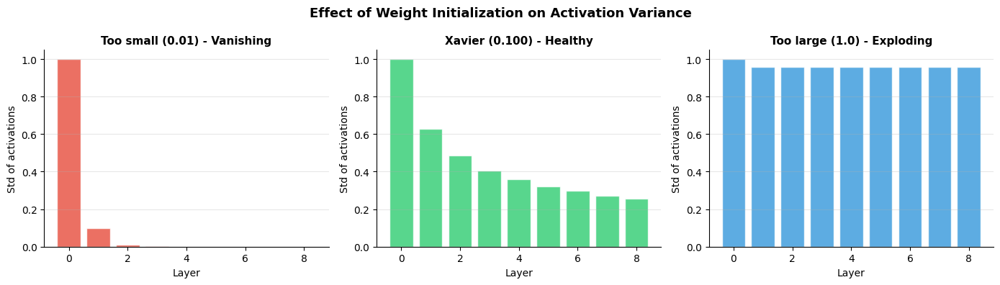
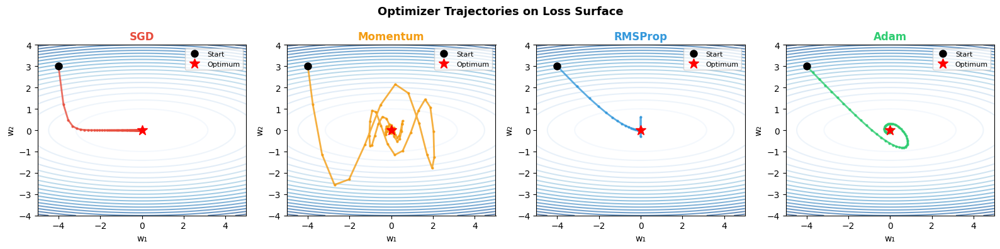
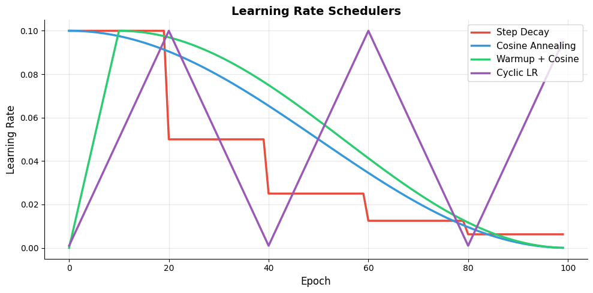
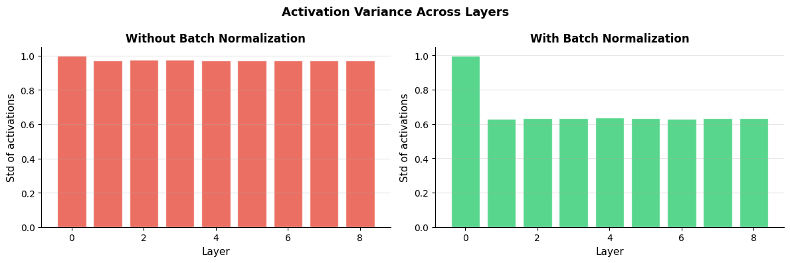
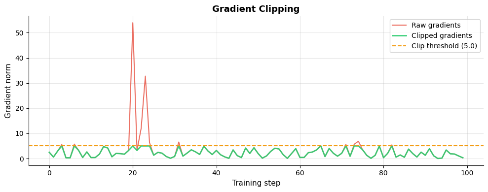

How do we train networks effectively?#
Topics: Weight Initialization · Optimizers · Learning Rate Schedulers · Batch Normalization · Gradient Clipping
1. Weight Initialization#
What it is#
Setting the starting values of weights before training
Bad initialization → vanishing or exploding gradients from epoch 1
Common strategies#
Method |
Formula |
Use with |
|---|---|---|
Random (too small) |
N(0, 0.01) |
— (avoid) |
Xavier / Glorot |
N(0, 2/(fan_in+fan_out)) |
Tanh, Sigmoid |
He initialization |
N(0, 2/fan_in) |
ReLU, Leaky ReLU |
Key intuition#
Goal: keep variance of activations roughly constant across layers
Too small → activations shrink to zero → vanishing gradients
Too large → activations explode → unstable training
import numpy as np
import matplotlib.pyplot as plt
np.random.seed(42)
def forward_activations(X, layers, init_scale):
activations = [X]
a = X
for W in layers:
z = a @ (W * init_scale)
a = np.tanh(z)
activations.append(a)
return activations
n_layers, n_neurons, n_samples = 8, 100, 500
layers = [np.random.randn(n_neurons, n_neurons) for _ in range(n_layers)]
X = np.random.randn(n_samples, n_neurons)
# Xavier scale
xavier_scale = np.sqrt(1.0 / n_neurons)
too_small = 0.01
too_large = 1.0
fig, axes = plt.subplots(1, 3, figsize=(14, 4))
configs = [(too_small, '#E74C3C', 'Too small (0.01) - Vanishing'),
(xavier_scale, '#2ECC71', f'Xavier ({xavier_scale:.3f}) - Healthy'),
(too_large, '#3498DB', 'Too large (1.0) - Exploding')]
for ax, (scale, color, title) in zip(axes, configs):
acts = forward_activations(X, layers, scale)
stds = [a.std() for a in acts]
ax.bar(range(len(stds)), stds, color=color, alpha=0.8, edgecolor='white')
ax.set_title(title, fontsize=11, fontweight='bold')
ax.set_xlabel('Layer', fontsize=10)
ax.set_ylabel('Std of activations', fontsize=10)
ax.grid(True, alpha=0.3, axis='y')
ax.spines['top'].set_visible(False)
ax.spines['right'].set_visible(False)
plt.suptitle('Effect of Weight Initialization on Activation Variance', fontsize=13, fontweight='bold')
plt.tight_layout()
plt.savefig('weight_init.png', dpi=120, bbox_inches='tight')
plt.show()

Interview Q&A#
Why not initialize all weights to zero?
All neurons compute the same output → same gradients → all weights update identically
Network never breaks symmetry → effectively a single neuron
Xavier vs He — when to use which?
Xavier → designed for tanh/sigmoid (assumes linear activations locally)
He → designed for ReLU (accounts for the fact that half the neurons output zero)
Gotchas#
Biases are safe to initialize to zero — only weights need careful initialization
PyTorch applies He init by default for Conv and Linear layers with ReLU
2. Optimizers#
What it is#
Algorithms that update weights using gradients to minimize the loss
Different strategies for step size, momentum, and adaptivity
Common optimizers#
Optimizer |
Key idea |
When to use |
|---|---|---|
SGD |
Fixed step in gradient direction |
Simple, with momentum + scheduler |
SGD + Momentum |
Accumulates velocity, smooths updates |
CV tasks with careful tuning |
RMSProp |
Adapts LR per parameter using gradient variance |
RNNs |
Adam |
Momentum + adaptive LR (combines SGD+M and RMSProp) |
Default for most tasks |
AdamW |
Adam + decoupled weight decay |
Transformers, NLP |
Key intuition#
SGD: always same step size → slow in flat regions, overshoots in steep ones
Momentum: builds up speed in consistent directions → faster convergence
Adam: adapts step size per parameter → handles sparse gradients well
import numpy as np
import matplotlib.pyplot as plt
# Simulate optimizer trajectories on a 2D loss surface (elongated bowl)
def loss_surface(w):
return (w[0]**2 / 10) + (w[1]**2)
def gradient(w):
return np.array([2*w[0]/10, 2*w[1]])
def run_optimizer(name, w_init, steps=60, lr=0.1):
w = w_init.copy().astype(float)
path = [w.copy()]
m, v = np.zeros(2), np.zeros(2)
beta1, beta2, eps = 0.9, 0.999, 1e-8
for t in range(1, steps+1):
g = gradient(w)
if name == 'SGD':
w -= lr * g
elif name == 'Momentum':
m = 0.9 * m + g
w -= lr * m
elif name == 'RMSProp':
v = 0.9 * v + 0.1 * g**2
w -= lr * g / (np.sqrt(v) + eps)
elif name == 'Adam':
m = beta1*m + (1-beta1)*g
v = beta2*v + (1-beta2)*g**2
m_hat = m / (1-beta1**t)
v_hat = v / (1-beta2**t)
w -= lr * m_hat / (np.sqrt(v_hat) + eps)
path.append(w.copy())
return np.array(path)
w0 = np.array([-4.0, 3.0])
optimizers = ['SGD', 'Momentum', 'RMSProp', 'Adam']
colors = ['#E74C3C', '#F39C12', '#3498DB', '#2ECC71']
# Loss surface
x1 = np.linspace(-5, 5, 200)
x2 = np.linspace(-4, 4, 200)
X1, X2 = np.meshgrid(x1, x2)
Z = (X1**2 / 10) + X2**2
fig, axes = plt.subplots(1, 4, figsize=(16, 4))
for ax, opt, color in zip(axes, optimizers, colors):
path = run_optimizer(opt, w0, steps=80, lr=0.3)
ax.contour(X1, X2, Z, levels=20, cmap='Blues', alpha=0.6)
ax.plot(path[:, 0], path[:, 1], color=color, linewidth=2, marker='o',
markersize=2, alpha=0.8)
ax.plot(*w0, 'ko', markersize=8, zorder=5, label='Start')
ax.plot(0, 0, 'r*', markersize=12, zorder=5, label='Optimum')
ax.set_title(opt, fontsize=12, fontweight='bold', color=color)
ax.set_xlabel('w₁', fontsize=10)
ax.set_ylabel('w₂', fontsize=10)
ax.legend(fontsize=8)
ax.set_xlim(-5, 5)
ax.set_ylim(-4, 4)
plt.suptitle('Optimizer Trajectories on Loss Surface', fontsize=13, fontweight='bold')
plt.tight_layout()
plt.savefig('optimizer_trajectories.png', dpi=120, bbox_inches='tight')
plt.show()

Interview Q&A#
Adam vs SGD — which is better?
Adam converges faster and needs less tuning → good default
SGD with momentum + scheduler often achieves better final accuracy → preferred in CV research
AdamW is the default for transformers
What is weight decay and how does it differ in Adam?
Weight decay = L2 regularization on weights
In standard Adam, weight decay is coupled with gradient adaptation → incorrect
AdamW decouples weight decay → proper regularization → better generalization
Gotchas#
Adam’s default lr=0.001 is a good starting point but not always optimal
Adam can converge to sharp minima that generalize worse than SGD — use weight decay
Always zero gradients before backward:
optimizer.zero_grad()
3. Learning Rate Schedulers#
What it is#
Strategies to adjust learning rate during training
High LR early (fast progress) → low LR later (fine-tune to minimum)
Common schedulers#
Scheduler |
Behavior |
When to use |
|---|---|---|
Step decay |
Reduce by factor every N epochs |
Simple, works well |
Cosine annealing |
Smooth cosine decay |
CV, general use |
Warmup + cosine |
Ramp up then decay |
Transformers |
Reduce on plateau |
Reduce when val loss stagnates |
Any task |
Cyclic LR |
Oscillates between min/max |
Faster convergence |
import numpy as np
import matplotlib.pyplot as plt
epochs = np.arange(0, 100)
def step_decay(epoch, lr0=0.1, drop=0.5, every=20):
return lr0 * (drop ** (epoch // every))
def cosine_annealing(epoch, lr0=0.1, T_max=100):
return lr0 * 0.5 * (1 + np.cos(np.pi * epoch / T_max))
def warmup_cosine(epoch, lr0=0.1, warmup=10, T_max=100):
if epoch < warmup:
return lr0 * epoch / warmup
return lr0 * 0.5 * (1 + np.cos(np.pi * (epoch - warmup) / (T_max - warmup)))
def cyclic_lr(epoch, lr_min=0.001, lr_max=0.1, step=20):
cycle = np.floor(1 + epoch / (2 * step))
x = np.abs(epoch / step - 2*cycle + 1)
return lr_min + (lr_max - lr_min) * np.maximum(0, 1-x)
schedulers = [
(step_decay, '#E74C3C', 'Step Decay'),
(cosine_annealing,'#3498DB', 'Cosine Annealing'),
(warmup_cosine, '#2ECC71', 'Warmup + Cosine'),
(cyclic_lr, '#9B59B6', 'Cyclic LR'),
]
fig, ax = plt.subplots(figsize=(10, 5))
for fn, color, label in schedulers:
lrs = [fn(e) for e in epochs]
ax.plot(epochs, lrs, color=color, linewidth=2.5, label=label)
ax.set_xlabel('Epoch', fontsize=12)
ax.set_ylabel('Learning Rate', fontsize=12)
ax.set_title('Learning Rate Schedulers', fontsize=14, fontweight='bold')
ax.legend(fontsize=11)
ax.grid(True, alpha=0.3)
ax.spines['top'].set_visible(False)
ax.spines['right'].set_visible(False)
plt.tight_layout()
plt.savefig('lr_schedulers.png', dpi=120, bbox_inches='tight')
plt.show()

4. Batch Normalization#
What it is#
Normalizes activations within a mini-batch to have mean=0, std=1
Then applies learned scale (γ) and shift (β) parameters
Applied after linear transformation, before activation
Key intuition#
Without BN: activations drift as weights change → later layers must constantly adapt
With BN: each layer sees consistently scaled inputs → more stable, faster training
Acts as regularization — adds noise (batch statistics vary) → reduces overfitting
When to use#
Deep networks (> 3 layers)
CNNs and fully connected networks
When training is slow or unstable
When not to use#
Very small batch sizes (< 8) → batch statistics unreliable → use Layer Norm instead
RNNs → use Layer Norm
Transformers → use Layer Norm
import numpy as np
import matplotlib.pyplot as plt
np.random.seed(42)
def batch_norm(x, gamma=1.0, beta=0.0, eps=1e-8):
mean = x.mean(axis=0)
var = x.var(axis=0)
x_norm = (x - mean) / np.sqrt(var + eps)
return gamma * x_norm + beta, mean, var
# Simulate activations across layers with and without BN
def simulate_network(n_layers=8, n_neurons=100, batch_size=64, use_bn=False):
a = np.random.randn(batch_size, n_neurons)
W_scale = 1.5
stds = [a.std()]
for _ in range(n_layers):
W = np.random.randn(n_neurons, n_neurons) * W_scale
z = a @ W
if use_bn:
z, _, _ = batch_norm(z)
a = np.tanh(z)
stds.append(a.std())
return stds
stds_no_bn = simulate_network(use_bn=False)
stds_bn = simulate_network(use_bn=True)
fig, axes = plt.subplots(1, 2, figsize=(12, 4))
axes[0].bar(range(len(stds_no_bn)), stds_no_bn, color='#E74C3C', alpha=0.8, edgecolor='white')
axes[0].set_title('Without Batch Normalization', fontsize=12, fontweight='bold')
axes[0].set_xlabel('Layer', fontsize=11)
axes[0].set_ylabel('Std of activations', fontsize=11)
axes[0].grid(True, alpha=0.3, axis='y')
axes[0].spines['top'].set_visible(False)
axes[0].spines['right'].set_visible(False)
axes[1].bar(range(len(stds_bn)), stds_bn, color='#2ECC71', alpha=0.8, edgecolor='white')
axes[1].set_title('With Batch Normalization', fontsize=12, fontweight='bold')
axes[1].set_xlabel('Layer', fontsize=11)
axes[1].set_ylabel('Std of activations', fontsize=11)
axes[1].grid(True, alpha=0.3, axis='y')
axes[1].spines['top'].set_visible(False)
axes[1].spines['right'].set_visible(False)
plt.suptitle('Activation Variance Across Layers', fontsize=13, fontweight='bold')
plt.tight_layout()
plt.savefig('batch_norm.png', dpi=120, bbox_inches='tight')
plt.show()

Interview Q&A#
Batch Norm vs Layer Norm?
Batch Norm → normalizes across the batch dimension → good for CNNs
Layer Norm → normalizes across the feature dimension → good for RNNs and Transformers
Key difference: Layer Norm works on single samples → no batch size dependency
Why does BN act as regularization?
Each mini-batch has slightly different mean/variance → adds noise to activations
This noise acts like dropout → reduces overfitting → sometimes reduces need for dropout
Gotchas#
BN behaves differently during training (uses batch stats) vs inference (uses running stats)
Always set model.eval() during inference in PyTorch — otherwise BN uses batch stats
Small batch sizes make BN statistics noisy → use Group Norm or Layer Norm instead
5. Gradient Clipping#
What it is#
Caps the gradient norm or value during backprop to prevent exploding gradients
Clips by norm: if
‖g‖ > threshold, scale g down so‖g‖ = threshold
When to use#
RNNs/LSTMs — prone to gradient explosion over long sequences
Transformers during early training
Any time you see loss suddenly spiking to NaN
When not to use#
CNNs with BN — rarely needed
If gradients are already small — clipping adds no benefit
import numpy as np
import matplotlib.pyplot as plt
np.random.seed(42)
# Simulate gradient norms with and without clipping
gradient_norms_raw = np.abs(np.random.randn(100) * 3 + 1)
gradient_norms_raw[20:25] *= 10 # simulate gradient spikes
threshold = 5.0
gradient_norms_clipped = np.minimum(gradient_norms_raw, threshold)
fig, ax = plt.subplots(figsize=(10, 4))
ax.plot(gradient_norms_raw, color='#E74C3C', linewidth=1.5, label='Raw gradients', alpha=0.8)
ax.plot(gradient_norms_clipped, color='#2ECC71', linewidth=2, label='Clipped gradients', alpha=0.9)
ax.axhline(threshold, color='#F39C12', linewidth=1.5, linestyle='--',
label=f'Clip threshold ({threshold})')
ax.set_xlabel('Training step', fontsize=11)
ax.set_ylabel('Gradient norm', fontsize=11)
ax.set_title('Gradient Clipping', fontsize=13, fontweight='bold')
ax.legend(fontsize=10)
ax.grid(True, alpha=0.3)
ax.spines['top'].set_visible(False)
ax.spines['right'].set_visible(False)
plt.tight_layout()
plt.savefig('gradient_clipping.png', dpi=120, bbox_inches='tight')
plt.show()
# PyTorch usage (reference)
print("PyTorch gradient clipping:")
print(" optimizer.zero_grad()")
print(" loss.backward()")
print(" torch.nn.utils.clip_grad_norm_(model.parameters(), max_norm=1.0)")
print(" optimizer.step()")

PyTorch gradient clipping:
optimizer.zero_grad()
loss.backward()
torch.nn.utils.clip_grad_norm_(model.parameters(), max_norm=1.0)
optimizer.step()
Interview Q&A#
Clip by value vs clip by norm?
Clip by norm → scales the entire gradient vector → preserves direction
Clip by value → clips each element independently → changes direction
Clip by norm is almost always preferred
What is a good threshold for gradient clipping?
1.0 is a common default for RNNs and Transformers
Monitor gradient norms during training to set an appropriate value
Gotchas#
Gradient clipping must happen after loss.backward() but before optimizer.step()
If clipping fires every step, learning rate is too high or initialization is poor